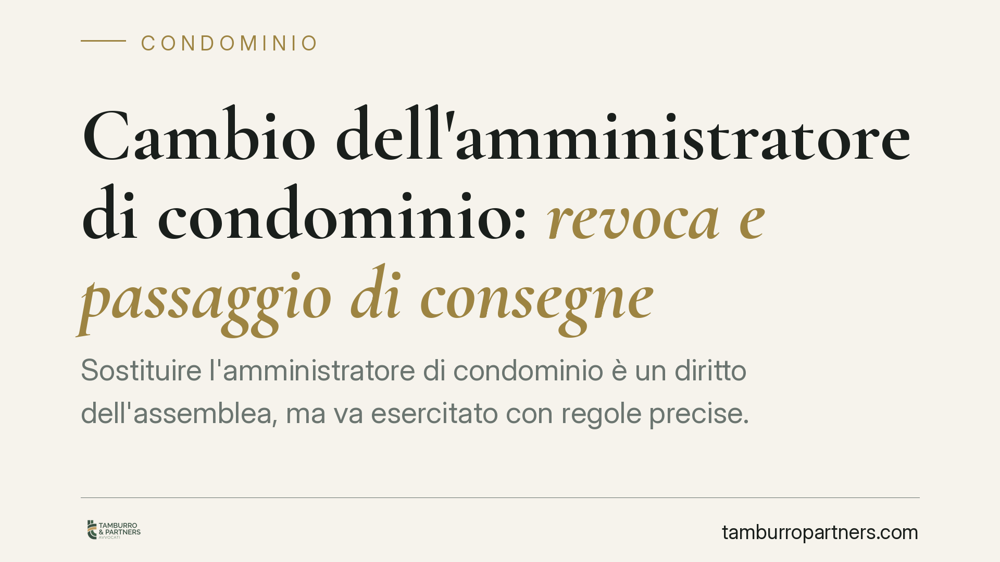
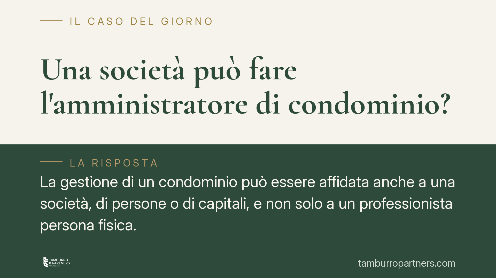
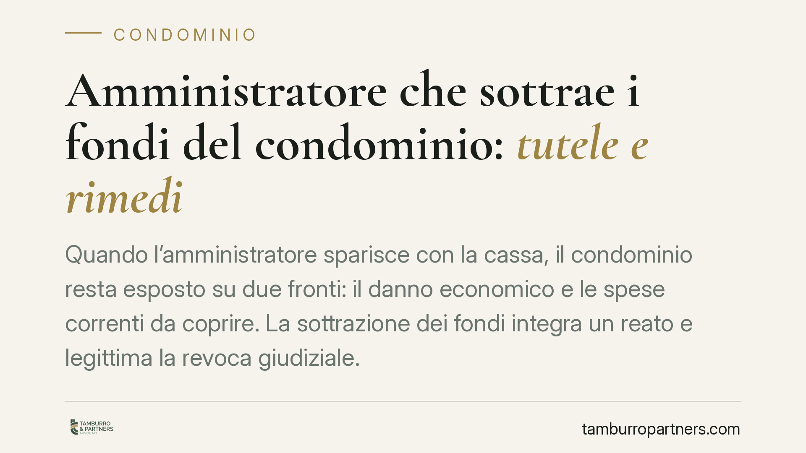
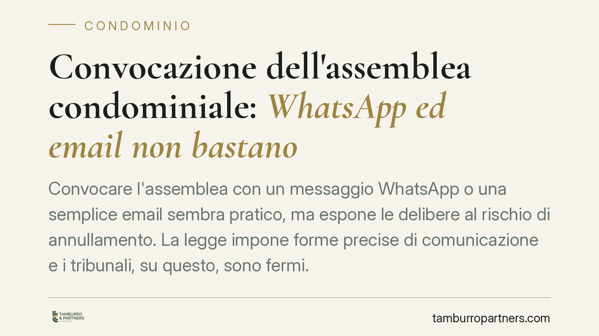
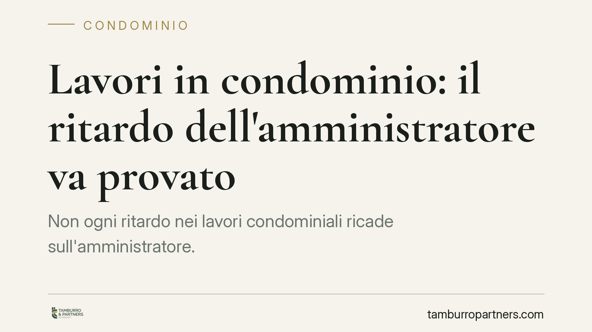
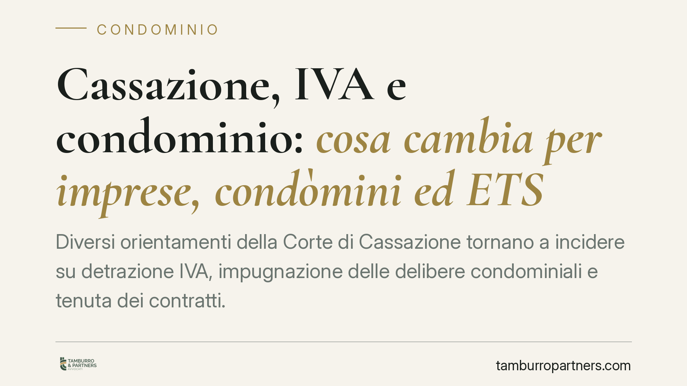
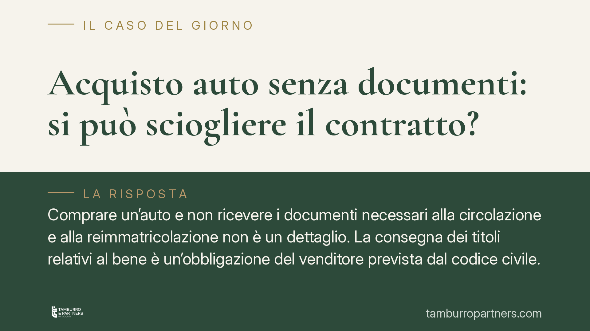
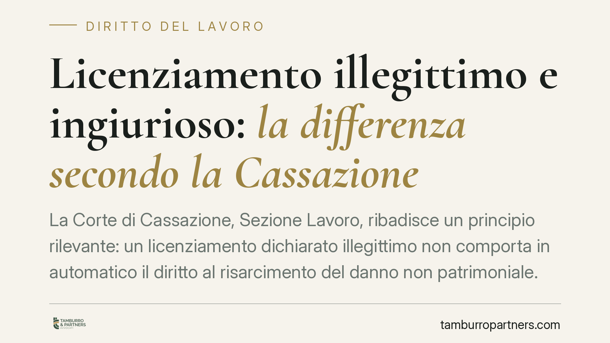
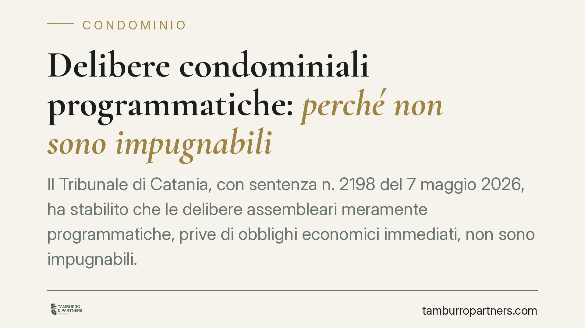
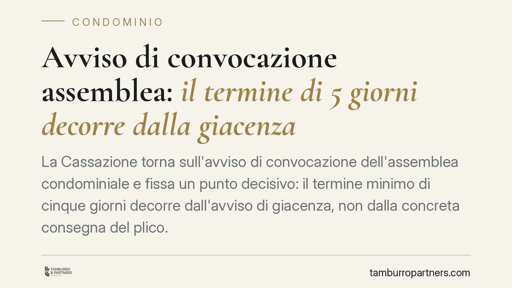

Estinzione anticipata del credito al consumo: il rimborso dei costi dopo la Lexitor
La Cassazione torna sul rimborso dei costi nel credito al consumo estinto in anticipo. Recependo i principi della sentenza europea Lexitor, ribadisce che al consumatore spetta la r…
Polizza assicurativa dell'amministratore di condominio: è obbligatoria?
La polizza professionale dell'amministratore di condominio non è imposta dalla legge in via generale, ma diventa obbligatoria quando l'assemblea la richiede o quando si deliberano …

Cambio dell'amministratore di condominio: revoca e passaggio di consegne
Sostituire l'amministratore di condominio è un diritto dell'assemblea, ma va esercitato con regole precise. Dalla delibera di revoca alla consegna della documentazione, ogni passag…

Una società può fare l'amministratore di condominio?
La gestione di un condominio può essere affidata anche a una società, di persone o di capitali, e non solo a un professionista persona fisica. La legge, però, impone che i requisit…
Formazione obbligatoria dell'amministratore di condominio: quando serve
La formazione dell'amministratore di condominio non è un dettaglio burocratico, ma un requisito di legittimità della nomina. Chi gestisce un condominio per professione deve dimostr…

Amministratore che sottrae i fondi del condominio: tutele e rimedi
Quando l'amministratore sparisce con la cassa, il condominio resta esposto su due fronti: il danno economico e le spese correnti da coprire. La sottrazione dei fondi integra un rea…
Superbonus 110% in condominio: la delibera basta a concludere il contratto?
L'assemblea approva l'offerta di un'impresa per i lavori col Superbonus 110%: il contratto è già concluso? La risposta è no. La sola deliberazione interna non vincola l'impresa: oc…

Convocazione dell'assemblea condominiale: WhatsApp ed email non bastano
Convocare l'assemblea con un messaggio WhatsApp o una semplice email sembra pratico, ma espone le delibere al rischio di annullamento. La legge impone forme precise di comunicazion…

Lavori in condominio: il ritardo dell'amministratore va provato
Non ogni ritardo nei lavori condominiali ricade sull'amministratore. Secondo un orientamento del Tribunale di Roma, i rallentamenti dovuti a ostacoli burocratici o alla morosità de…

Cassazione, IVA e condominio: cosa cambia per imprese, condòmini ed ETS
Diversi orientamenti della Corte di Cassazione tornano a incidere su detrazione IVA, impugnazione delle delibere condominiali e tenuta dei contratti. Per imprese, condòmini ed enti…
Bonus assunzioni donne svantaggiate: requisiti e calcolo dell'incremento occupazionale
Torna l'attenzione sugli incentivi all'occupazione femminile. L'esonero contributivo per l'assunzione di donne svantaggiate poggia sul regime europeo degli aiuti di Stato (GBER) e …

Acquisto auto senza documenti: si può sciogliere il contratto?
Comprare un'auto e non ricevere i documenti necessari alla circolazione e alla reimmatricolazione non è un dettaglio. La consegna dei titoli relativi al bene è un'obbligazione del …

Licenziamento illegittimo e ingiurioso: la differenza secondo la Cassazione
La Corte di Cassazione, Sezione Lavoro, ribadisce un principio rilevante: un licenziamento dichiarato illegittimo non comporta in automatico il diritto al risarcimento del danno no…

Delibere condominiali programmatiche: quando non si possono impugnare
Il Tribunale di Catania, con la sentenza n. 2198 del 7 maggio 2026, ha stabilito che le delibere assembleari meramente programmatiche, prive di obblighi economici immediati, non po…

Avviso di convocazione assemblea: il termine di 5 giorni decorre dalla giacenza
La Cassazione torna sull'avviso di convocazione dell'assemblea condominiale e fissa un punto decisivo: il termine minimo di cinque giorni decorre dall'avviso di giacenza, non dalla…
L'intelligenza artificiale può decidere chi assumere e chi licenziare?
Software che selezionano curriculum e algoritmi che misurano la produttività sono ormai diffusi nelle aziende. Ma una macchina può davvero scegliere chi assumere o chi mandare a ca…

Immissioni rumorose in condominio: il locale risponde anche in zona trafficata
Vivere in una via trafficata non significa rinunciare alla tutela contro i rumori. Un orientamento giurisprudenziale consolidato chiarisce che il locale commerciale risponde delle …

Rivalsa tra assicurazioni nei sinistri RC auto: i limiti fissati dalla Cassazione
Una recente pronuncia della Corte di Cassazione interviene sui rapporti di rivalsa tra compagnie assicurative nei sinistri con pluralità di responsabili. La decisione distingue tra…

Pignoramento dello stipendio: limiti e quote pignorabili
Il pignoramento dello stipendio non azzera la busta paga: la legge fissa quote massime trattenibili, variabili a seconda del creditore e del reddito. Capire come si calcolano le qu…

Trasparenza salariale: cosa cambia per aziende e lavoratori
Il decreto legislativo attuativo della direttiva UE 970/2023 introduce in Italia obblighi stringenti di trasparenza retributiva. Le aziende dovranno comunicare i livelli di paga gi…

Intelligenza artificiale e controllo emotivo dei lavoratori: i limiti privacy
L'analisi automatizzata dello stato emotivo dei dipendenti tramite intelligenza artificiale solleva un nodo serio: monitorare lo stress attraverso le comunicazioni aziendali può vi…

Vacanza rovinata: quando albergatore e vettore rispondono
La Cassazione torna a occuparsi di disservizi turistici: alloggi non conformi e voli in ritardo possono generare un obbligo risarcitorio. La materia, però, va letta con precisione:…

Assemblee di condominio online: regole e validità delle delibere
L'assemblea condominiale può svolgersi in videoconferenza. La possibilità, ormai stabile nel Codice civile, richiede però il rispetto di regole precise su consenso, convocazione e …

Appalti ad alta intensità di manodopera: la verifica di congruità del costo del lavoro
La verifica di congruità del costo del lavoro negli appalti ad alta intensità di manodopera non può fermarsi alle tabelle ministeriali. Secondo un consolidato orientamento del Cons…

Chiusura del conto corrente: quali spese può chiedere la banca
Chiudere un conto corrente è un diritto del cliente, non una concessione della banca. Eppure spesso compaiono spese di chiusura, penali o costi di trasferimento che restano oscuri.…

Distacco di luce e acqua al condomino moroso: cosa permette la legge
Quando un condomino non paga, il condominio cerca strumenti rapidi di pressione. La legge consente all'amministratore di sospendere alcuni servizi dopo sei mesi di morosità, ma con…

Legge 104 e partita IVA: cosa potrebbe cambiare per gli autonomi nel 2026
Si discute da mesi di un'apertura della Legge 104/1992 ai lavoratori autonomi con partita IVA che assistono familiari con disabilità grave. Allo stato, però, non esiste un testo at…

Lavori in condominio: chi decide e quando sono urgenti
Chi decide i lavori in condominio? La regola generale affida la scelta all'assemblea, ma l'amministratore può agire da solo nei casi urgenti. Distinguere tra manutenzione ordinaria…

Mediazione obbligatoria in condominio: la stretta dei Tribunali sulla partecipazione effettiva
Diverse pronunce di merito del 2026 tornano sul nodo della mediazione obbligatoria nelle controversie condominiali. Il messaggio è netto: non basta presentarsi al primo incontro pe…

Compenso dell'avvocato e maggiorazioni: come funzionano le percentuali sui parametri
Si parla spesso di un "30% in più" sulla parcella dell'avvocato, ma la disciplina dei parametri forensi è più articolata. Le maggiorazioni esistono, sono ancorate a presupposti pre…